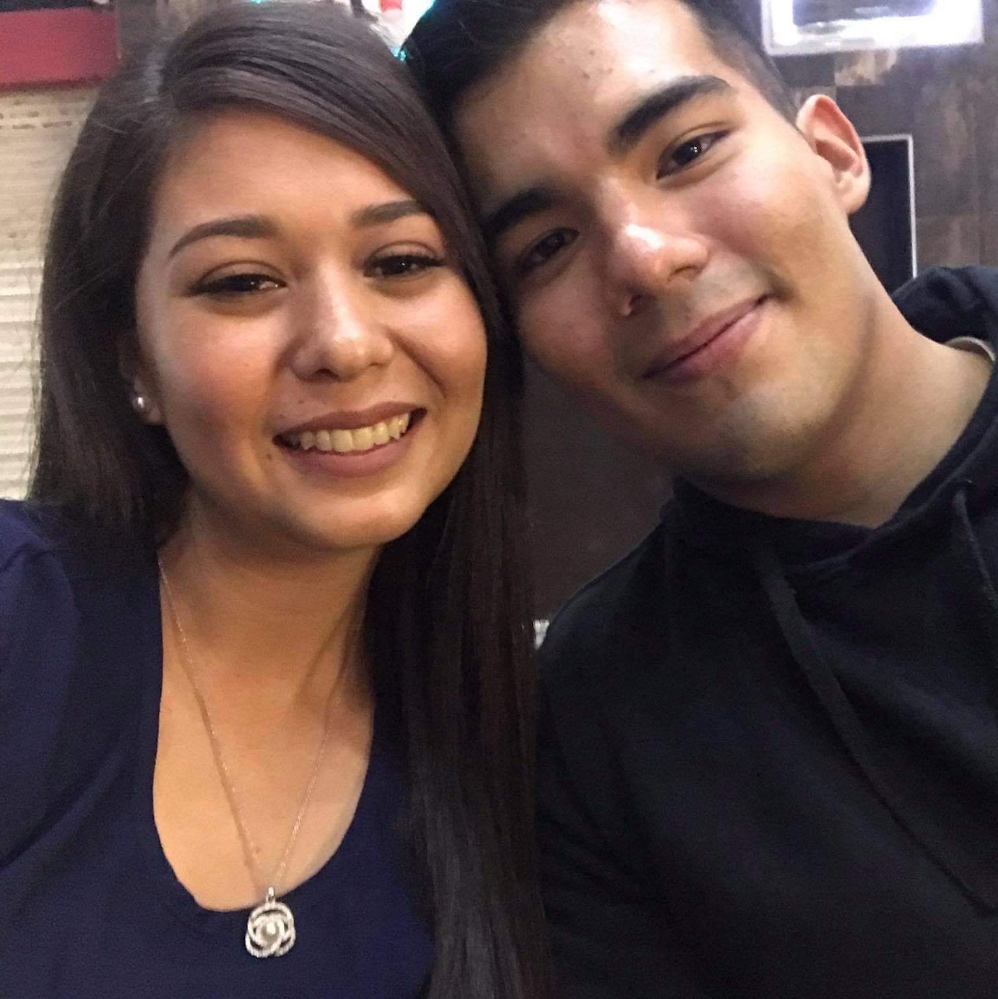

El conocerte
Todo comenzó aquí, aquel 20 de marzo de 2020. Teníamos meses hablando, y yo ya estaba totalmente seguro de que sentía algo por ti. Estaba nervioso, por saber que decirte y como no aburrirte. Ese dia me peine de ladito, use el mejor hoodie que tenia, no tenia trabajo y ni un peso en la bolsa, asi que decidi limpiar los únicos tenis aceptables que tenía y les cambie las cintas por unas de colores para estar combinado y que parecieran nuevos. Ahí estaba, sentado en el Italian Coffe, con las piernas temblando…
Los segundos eran eternos al saber que te vería finalmente en persona, y entonces apareciste a lo lejos en la entrada del lugar. Usando esa bella blusa azul, me tiraste una sonrisa desde lejos y al levantarme me diste un abrazo, olias tan rico y eras tan suave. En ese momento me dije en mi mente: es aquí, la búsqueda de mi felicidad terminó.
Conversamos tan natural, me contaste tantas cosas. Tu mirada era tan sincera, tu voz tan dulce, tus manos tan suaves. Tomamos nuestro café, y ahora los segundos volaban uno tras otro. Cada minuto que pasaba podía dejar de mirarte menos, y en el fondo me repetía mas y mas: es ella Moy, esta es la persona.
Comenzaba a preguntarme, si querrías ir a caminar. Y accediste con otra sonrisa. Fuimos frente a los cines y sentados, me diste a entender que también sentías algo por mi. Fue tan hermoso, tantas partes de mi se conectaron y volvieron a vivir. Solo quedaba ir a dejarte de nuevo con tu hermana y tu amiga, acompañandolas a unas compras. Caminábamos y tu conversabas con ellas, yo, solo caminaba en silencio con las manos dentro de mi hoodie, con una pequeña sonrisa mirando tu pelo y viéndote reír con ellas.
Entonces, llegó el momento de despedirnos. Fue rápido, pero entendí que si nos veríamos de nuevo. Que si habría oportunidad. Camine en silencio después de eso, suspirando. Sabía que empezaba una nueva etapa en mi vida. Que habría mucho por hacer y vivir, tanto que hablar y compartir, mostrarte quien soy y aprender tanto de ti. Tenía todas las dudas del mundo, sobre que te gustaba comer, hacer, que lugares te gustaba ir. Pero no había prisa, solo me retire del lugar feliz, sabiendo que finalmente había conocido a Diana. La mujer que cambiaría mi vida para siempre.